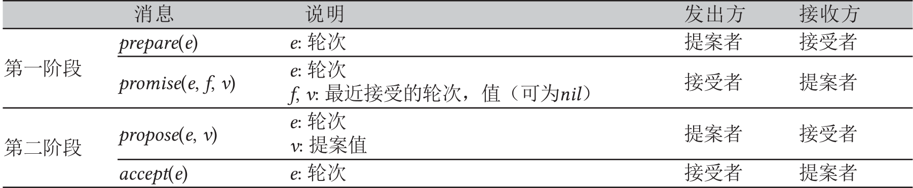
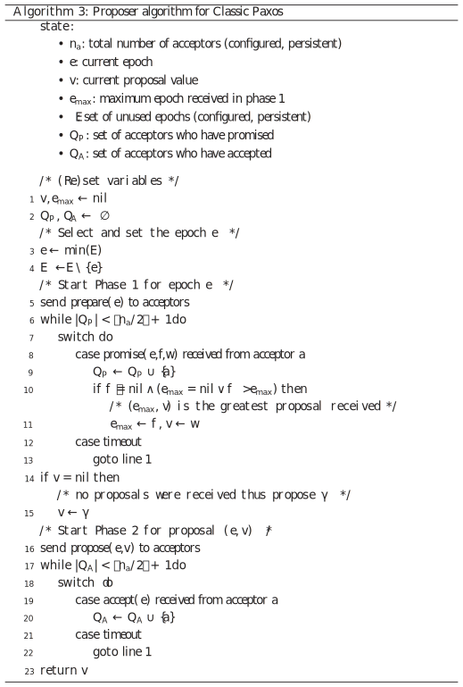
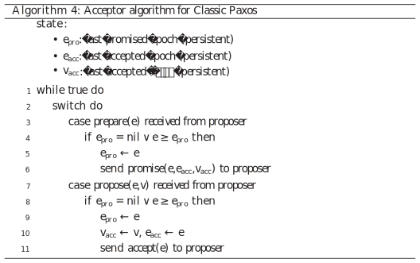

[译]简说Paxos（Paxos Made Simple）
https://ying-zhang.cn/dist/2001-paxos-simple-cn/
Paxos Made Simple
Leslie Lamport，2001年11月01日
ACM SIGACT News (Distributed Computing Column). 32(4). 51—58. 2001. doi.org/10.1145/568425.568433
https://lamport.azurewebsites.net/pubs/paxos-simple.pdf
原文 html
译者：Ying ZHANG. 2021-06, 08, 10; 2023-05, 11; 2025-06.
译文 PDF
以及节选自Heidi Howard博士论文的“经典Paxos”和译文 PDF
Copyright © 2001 by the Association for Computing Machinery, Inc. Permission to make digital or hard copies of part or all of this work for personal or classroom use is granted without fee provided that copies are not made or distributed for profit or commercial advantage and that copies bear this notice and the full citation on the first page. Copyrights for components of this work owned by others than ACM must be honored. Abstracting with credit is permitted. To copy otherwise, to republish, to post on servers, or to redistribute to lists, requires prior specific permission and/or a fee.
我的文章（节选）
Leslie Lamport
http://lamport.azurewebsites.net/pubs/pubs.html#paxos-simple
140. Paxos Made Simple
ACM SIGACT News (Distributed Computing Column), 32(4) (Whole Number 121, December 2001) 51-58.
在2001年的PODC会议上译注：彼时恰逢 Lamport 60岁生日，我受够了人们说发表在[123]的Paxos算法难以理解。尽管人们可能被文章中虚构的希腊人名分心，但算法本身很简单。因此，我把几个人带到会议一角，不用论文，口头向他们解释算法。回家后，我把讲解写成了简短的笔记，随后基于Fred Schneider和Butler Lampson的评论做了修改。目前的版本有13页，$n_1 > n_2$是里面最复杂的公式了。
2015年，Amazon的Michael Deardeuff告知我，文中的一句话有歧义，理解错的话就使算法出错了。Deardeuff发现Github上好几个Paxos的实现是错误的算法。显然，开发者没有用心阅读[123]的准确描述。我不会删除这句歧义的话，或指出是那一句译注：见正文标记和文末的说明。随笔不是准确描述算法的方式。不要基于本文实现该算法。要用[123]。
摘要：Paxos算法，用日常语言表述，是很简单的。
1. 引言
用于实现容错分布式系统的Paxos算法一直被认为难以理解，可能是因为对许多读者来说，最初的介绍是关于希腊的[5]此处Greek是个双关语，既指本意“希腊的”，也指“晦涩难懂的”。事实上，它是最简单和最明显的分布式算法之一。它的核心是共识算法——[5]中的“synod”算法synod意为教会会议。下一节表明，基于我们希望它满足的属性，顺理成章地就得到了此共识算法。最后一节解释了完整的Paxos算法：将共识直接应用于构建分布式系统的状态机方法，就得到了Paxos算法。而状态机方法应该是众所周知的，因为它是文献[4]的主题，而这篇文章可能是分布式系统理论中最常被引用的。
2. 共识算法
2.1 问题
假设有一组进程，它们都可以提案（propose）。共识算法确保仅在提案的值中选定（chosen）一个值。若没有提出值，则不应选定值。如果已经选定了一个值，那么进程应该能够获知（learn）所选的值。共识的安全性（safety）要求是：
- 只能选定提案中的值，
- 只选定一个值，且
- 进程获知的必须是已选定的值。
我们不会严格给出活性（liveness）要求。总的来说，活性的目标是确保最终能选定某个提案的值；若已选定某个值，则进程最终可以获知该值。
共识算法中有三种参与者（agents）来承担三种角色：提案者（proposers）、接受者（acceptors）和获悉者（learners）。实现中，一个进程可以作为多种参与者，这里我们不关心参与者如何与进程对应。
假设参与者可以通过发送消息相互通信。我们使用惯用的异步非拜占庭模型，其中：
- 参与者以任意速率运行，可能会崩溃并停止（fail by stopping），也可能会重新启动。由于所有参与者可能在选定一个值后崩溃并重启，因此参与者需要记住某些信息，否则不可能有解决方案。
- 消息的传递时间可以任意长，可以重复，也可以丢失，但不会损坏。
2.2 选定一个值
要选定一个值，最简单方法是只有一个接受者。提案者向接受者发送提案，后者选定它收到的第一个提案的值。虽然简单，但这个方案无法令人满意，因为接受者崩溃会使算法不可能再取得进展。
因此，让我们尝试另一种选定值的方法。我们来使用多个接受者，而非单个接受者。提案者将提案的值发送给一组接受者。接受者可以“接受”（accept）提案值。当足够多的接受者接受某个值后，就选定该值。多少才够多？为了确保只选定一个值，我们要有一个足够大的集合，由多数的majority，即过半数任意参与者组成。因为任意两个多数集合都至少有一个共同的接受者，若一个接受者最多可以接受一个值，这就能保证只选定一个值了（在许多论文中已经观察到了“多数”的结论，看起来最早是[3]）。
在没有崩溃或消息丢失的情况下，若仅有一个提案者，它仅提出一个值，我们应该选定这个值。这表明了下面的要求：
$P1$. 接受者必须接受它收到的第一个提案。
但是这个要求引发了一个问题。不同的提案者可能几乎同时提出多个值，导致出现了每个接受者都接受了一个值，但没有单个值获得多数接受的情况。即使只有两个提案的值，若每个值都被将近一半的接受者接受，单个接受者的崩溃可能会导致无法得知选定了哪个值。
$P1$以及“只有在多数接受者接受后才选定一个值”的要求，意味着必须允许接受者接受多个提案。我们为每个提案分配一个（自然数）编号，来记录接受者可能接受的不同提案，因此提案由提案编号和值组成。为了防止混淆，我们要求不同提案的编号不同。这可以有不同的实现方式，这里我们只假设编号确实不同。当包含某个值的提案被多数接受者接受时，就说这个值被选定了。这时，我们说提案（以及值）被选定了。
我们允许了选定多个提案，但必须保证所有被选定的提案都有相同的值。通过对提案编号的归纳，我们需要满足下面的要求：
$P2$. 如果选定了一个值为$v$的提案，那么每个选定的编号更大的提案，其值也应该是$v$。
因为编号是有序的，$P2$保证了仅选定单个值这一关键安全属性。
要被选定，提案必须被至少一个接受者接受。所以，我们可以通过满足下面的要求来满足$P2$：
$P2^a$. 如果选定了一个值为$v$的提案，那么任一接受者所接受的编号更大的提案，其值也应该是$v$。
$P1$仍然需要满足，以确保有提案被选定。由于通信是异步的，一条提案可能被选定了，但某个接受者$c$却从未收到过任何提案译注：异步系统的消息可能丢失，也可能乱序，而且进程的运行速率也是任意的。这种情况下，$c$实际上并没有参与提案选定过程，或者说，提案选定算法“包容”了$c$从故障。假设一个新的“刚醒来的”提案者发起一条编号更大的提案，但值与$c$已接受提案的值不同这里的关键不是“刚醒来”，而是“编号更大但值不同”的提案。$P1$要求$c$接受这个提案，但这违反了$P2^a$。为了同时满足$P1$和$P2^a$，需要加强$P2^a$：
$P2^b$. 如果选定了一个值为$v$的提案，那么任意提案者发起的编号更大的提案，其值也应该是$v$。
由于提案必须由提案者发起，之后才被接受者接受，因此$P2^b$蕴含了$P2^a$，继而蕴含了$P2$译注：注意，$P2^a$是关于接受者的，而$P2^b$是关于提案者的。接受者是被动的，提案者是主动的。
为了探索如何满足$P2^b$，让我们先考虑如何证明它。我们假设某个编号为$m$且值为$v$的提案已经被选定，并表明任何以编号$n \gt m$发起的提案的值也会是$v$。为了容易证明，我们对$n$进行归纳，归纳假设是“以编号$m .. (n-1)$发起的提案的值都是$v$”，其中$i .. j$表示从$i$到$j$的所有整数的集合译注：实际上允许不连续的编号，要证明编号$n$的提案的值也是$v$。为了选定编号$m$的提案，必须存在某个集合$C$，包含多数接受者，且$C$中每个接受者都接受了该提案。将此与归纳假设结合，编号$m$的提案被选定的假设意味着：
$C$中的每个接受者已经接受了编号为$m .. (n-1)$的提案，且这些提案的值都是$v$。
由于任何包含多数接受者的集合$S$，至少包含一个$C$中的成员，我们可以得出，要使编号$n$的提案的值是$v$，需保证以下的不变式（invariant）：
$P2^c$. 对于任意$v$和$n$，若发起一条编号为$n$且值为$v$的提案，则存在一个多数接受者的集合$S$，满足
(a) $S$中没有接受者接受过编号小于$n$的提案，或者
(b) $v$是$S$中接受者接受的编号仅次于$n$的提案的值。
译注：$P2^c$的约束(a)是指$S$中各接受者没有接受过任何提案；约束(b)中“编号仅次于$n$的提案”是指编号小于$n$的所有提案中，编号最大的那个提案。
这样，我们可以通过保持$P2^c$的不变式来满足$P2^b$。
为了满足$P2^c$的不变式，提案者想要发起编号$n$的提案之前，必须获知编号仅次于$n$的提案（如果有的话），该提案已经或将被多数接受者接受。获知已经接受的提案很容易；但很难预知未来接受的提案。提案者不去预测未来，而是控制未来，即要求“将来不会接受”的承诺（promise）。换句话说，提案者要求接受者不再接受编号小于$n$的提案。这就得到了下面的发起提案算法。
- 1. 提案者分配新提案编号$n$并向一组接受者的每个成员发送请求，要求其回复：
- (a) 承诺不再接受编号小于$n$的提案，和
- (b) 它已经接受的编号仅次于$n$的提案，如果有的话。
我将把这样的请求称为编号为$n$的“准备”（prepare）请求。
- 2. 当提案者收到多数接受者对请求的回复，它才可以发起一条编号为$n$且值为$v$的提案，其中$v$是回复中编号最大的提案包含的值，若回复都没有报告提案，则提案者可以用任意值。
提案者发起提案，是指向一组接受者发送请求，要求接受该提案（不必是回复初始请求的那一组接受者）。我们称其为“接受”（accept）请求。
这就是提案者的算法。接受者呢？它会收到来自提案者的两种请求：“准备”请求和“接受”请求。接受者可以忽略任意请求而不会影响安全性。所以，我们只需要说明何时允许回复请求。它总是可以回复“准备”请求。仅当不违反已做出的承诺时，它才可以回复“接受”请求，接受提案。换句话说：
$P1^a$. 接受者可以接受一条编号为$n$的提案，当且仅当它没有回复过编号大于$n$的“准备”请求。
注意到$P1^a$涵盖了$P1$。
现在我们就有完整的算法了，可以选定一个满足所述安全性的值——假设提案编号没有重复。最终的算法还要一点优化。
假设接受者收到一个编号为$n$的“准备”请求，但它已经回复了编号大于$n$的“准备”请求，从而承诺了不接受任何编号为$n$的提案。那么接受者就没必要回复这个“准备”请求了，因为它不会接受编号为$n$的提案，所以我们让接受者忽略这个“准备”请求。我们还让它忽略已接受提案的“准备”请求译注：这是乱序或重复的消息。
通过这项优化，接受者只需要记住它曾经接受过的编号最大的提案和它回复过的编号最大的“准备”请求的编号。无论是否发生崩溃，$P2^c$的不变式必须保持，因此接受者必须记住这些信息，即使它崩溃后重启。请注意，提案者总是可以放弃一条提案并忽略它——只要它从不尝试发起编号重复的提案。
将提案者和接受者的动作合在一起，我们得到分两个阶段运行的算法。
- 第一阶段
- (a) 提案者分配提案编号$n$并向多数接受者发送一个编号为$n$的“准备”请求。
- (b) 如果接受者收到编号为$n$的“准备”请求，且$n$大于它回复过的所有“准备”请求，那么它回复该请求，承诺不再接受任何编号小于$n$的提案，并附上它已接受的编号最大的提案（如果有）。
- 第二阶段
- (a) 如果提案者收到多数接受者对其（编号为$n$的）“准备”请求的回复，那么它向接受者发送“接受”请求，包含编号为$n$且值为$v$的提案，其中$v$是回复中编号最大的提案的值，若回复都没有报告提案，则可以为任意值。
- (b) 如果接受者收到编号为$n$的提案的“接受”请求，那么它接受该提案，除非它已经回复过编号大于$n$的“准备”请求了。译注：这是Deardeuff指出有歧义的那句。详见文末的说明。
一个提案者可以发起多个提案，只要它对每个提案都遵循上述算法即可。算法运行期间，它可以随时放弃提案（即使放弃提案很久之后，该提案的请求和/或回复可能才到达目的地，但仍会保持正确性）。如果有提案者开始尝试发起编号更大的提案，那么放弃当前提案可能是个好主意。因此，如果一个接受者由于已经收到了一个编号更大的“准备”请求而忽略了一项“接受”或“准备”请求，那么它可以通知被忽略请求的提案者，然后提案者放弃它的提案。这只是一项性能优化，不影响正确性。
2.3 获知选定的值
要获知已选定的值，获悉者必须确定某项提案已被多数接受者接受。显而易见的算法是，让每个接受者一旦接受一条提案，就将该提案转发给所有获悉者。这让获悉者立即可以获知选定的值，但这要求每个接受者回复每个获悉者——回复的数量等于接受者数量与获悉者数量的乘积。
非拜占庭崩溃的假设使一个获悉者很容易从另一个获悉者那里发现被接受的值。我们可以让接受者接受之后仅回复一个特别的获悉者，当值被选定后，它再通知其它获悉者。这种方法需要额外的一轮通信，才能让所有获悉者获知选定的值。这也不太可靠，因为特别获悉者可能会崩溃。但这种方法需要的回复数量仅等于接受者数量和获悉者数量之和。
更一般地，接受者接受之后回复一组特别的获悉者，选定了值之后，这些特别获悉者都可以通知所有其它获悉者。使用更大的特别获悉者集合有更高的可靠性，但以更大的通信复杂性为代价。
由于消息丢失，可能一个值被选定了，但没有被获悉者发现。获悉者可以询问接受者它们接受了哪些提案，但一个接受者崩溃就可能无法得知是否有多数接受了某个提案。这种情况下，只有在选定新的提案后，获悉者才会发现选定了什么值。若获悉者需要知道某个值是否已被选定，它可以让提案者使用上述算法发起提案。
2.4 进展
很容易构造一个场景，其中两个提案者都不断发起一系列编号不断增加的提案，但没有一个被选定。提案者$p$完成了编号$n_1$的提案的第一阶段，然后另一个提案者$q$完成了编号$n_2$的提案的第一阶段，$n_2 \gt n_1$。提案者$p$的编号$n_1$提案第二阶段的“接受”请求就被忽略了，因为接受者都承诺不再接受任何编号小于$n_2$的提案。因此，提案者$p$开始并完成编号为$n_3 \gt n_2$的新提案的第一阶段，导致提案者$q$的第二阶段的“接受”请求被忽略了。如此往复。
为了保证进展，必须选出一个特别的提案者，唯一允许尝试发起提案。如果特别提案者可以与多数接受者成功通信，并且如果它使用的提案编号大于已使用的，那么它将成功发起提案并被接受。若得知某个请求的提案编号更大，就放弃提案并重新开始，特别提案者最终能分配一个足够大的提案编号。
如果系统大部分（提案者、接受者和通信网络）正常工作，那么可以通过选举一个特别提案者来实现活性（liveness）。Fischer，Lynch和Patterson [1]的著名结论表明译注：即FLP定理，用于选举提案者的可靠算法必须使用随机性或物理时间（real time）——例如，使用超时。但是，无论选举成败，安全性都是有保障的。
2.5 实现
Paxos算法[5]假设了网络连接的一组进程。在其共识算法中，每个进程都作为提案者、接受者和获悉者的角色。算法选出一个领导者，领导者作为特别提案者和特别获悉者的角色。Paxos共识算法正是上文描述的算法，其中请求和回复作为普通消息发送（回复消息标有对应的提案编号以防止混淆）。持久存储用于故障期间保存接受者必须记住的信息。在实际发送回复之前，接受者先将其预定的回复记录到持久存储中。
剩下的就是描述保证不会发起编号重复的提案的机制。不同的提案者从不相交的集合中分配它们的编号，因此两个不同的提案者永远不会发起编号相同的提案译注：另一种方法是将提案者标识（ID）作为编号的一部分，即编号格式为⟨提案者ID，自然数⟩，按字典序比较，假设提案者ID不同。每个提案者都记住（在持久存储中）它尝试发起的编号最大的提案，用一个比旧编号更大的编号来开始第一阶段。
3. 实现状态机
实现分布式系统的一种简单方法是一组客户端向中央服务器发送命令。服务器可以描述为一个确定性状态机，它以某种顺序执行客户端命令。状态机有当前状态；它将客户端的命令作为输入并产生输出和新状态，从而执行了一步。例如，分布式银行系统的客户端可能是柜员，状态机的状态可能由所有用户的账户余额组成。取款将通过执行状态机命令来实现，当且仅当余额大于取款金额时，该命令会扣减帐户余额，算出新/旧余额作为输出。
如果中央服务器发生故障，那么整个系统也就崩溃了。因此，我们改为使用一组服务器，每个服务器独立地实现状态机。因为状态机是确定性的，如果所有服务器都执行相同的命令序列，那么它们将产生相同的状态序列和输出。然后，发起命令的客户端可以使用任意服务器生成的输出。
为了保证所有服务器执行相同的状态机命令序列，我们分别实现了一系列Paxos共识算法的实例，被第$i$个Paxos实例选定的就是状态机命令序列的第$i$项命令。每个服务器在算法的每个实例中承担三个角色（提案者、接受者和获悉者）。现在，我假设服务器的集合是固定的，因此共识算法的所有实例都使用相同的参与者集合。
正常情况下，仅一个服务器被选为领导者，在共识算法的所有实例中充当特别提案者（唯一尝试发起提案的）。客户端向领导者发送命令，领导者决定每个命令出现的顺序。如果领导者决定某个客户端的命令应该是第135项，那么它将尝试把该命令作为第135个共识算法实例选定的值。这通常能成功。领导者可能因故障而崩溃，或者因为另一个服务器也认为自己是领导者，并且对第135项命令的内容有分歧。但是共识算法可以确保最多只能选定一条命令作为第135项。
这种方法的效率的关键在于，Paxos共识算法中，提案的值到第二阶段才被选定。回想一下，在完成提案者算法的第一阶段后，要么提案的值要么已经确定了，要么提案者可以自由提出任意值。
现在我来描述正常状态下Paxos状态机实现是如何工作的。稍后，我将讨论可能出错的地方。我来考虑前任领导者刚刚崩溃并选举了新领导者后会发生什么（系统启动是特殊情况，此时尚未提出任何命令）。
作为共识算法所有实例的获悉者，新的领导者应该知道大部分已经选定的命令。假设它知道命令1—134、138和139，即共识算法的实例1—134、138和139中选定的值（稍后我们将看到命令序列中的这种间断是如何产生的）。然后它运行实例135—137和所有139之后的实例的第一阶段（我将在下面描述这是如何完成的）。假设实例135和140的提案值是由第一阶段的运行结果确定的，但其它实例的提案值没有限制。之后新领导者为实例135和140运行第二阶段，从而选定命令135和140。
新领导者，以及获悉了该领导者已知所有命令的其它服务器，现在可以执行命令1—135了。但是，仍不能执行命令138—140，尽管它们已经知道这几条命令，因为命令136和137尚未选定。领导者可以将客户端随后请求的两条命令作为命令136和137。相反，我们通过提出特殊的不改变状态的no-op命令，作为第136和137项，从而立即填补间断（新领导者通过运行第136和137个共识算法实例的第二阶段来实现这一点）。一旦这两处选定了no-op命令，第138—140项命令就可以执行了。
现在已经选定了命令1—140。领导者也完成了所有大于140的共识算法实例的第一阶段，并且可以在这些实例的第二阶段中自由提案任意值。它将编号141分配给客户端发送的下一条命令，将其作为第141个共识算法实例的第二阶段的值。它将收到的再下一条客户端命令作为第142项，依此类推。
在尚未获知第141项命令是否被选定的情况下，领导者就可以提案第142项命令。它可能会丢失提案第141项命令时发送的所有消息；也可能在所有其它服务器获知领导者为命令141提案的内容之前，就选定命令142。当领导者未能收到第141个实例预期的第二阶段回复消息时，它将重新发送这些第二阶段的消息。若一切顺利，将选定其提案的命令。但是，它可能先崩溃了，从而在选定命令的序列中留下间断。一般来说，假设一个领导者可以提前$\alpha$项命令——也就是说，在第1至$i$项命令被选定后，它可以提案第$i+1$至$i+\alpha$项命令——可能产生最多$\alpha-1$条命令的间断。
新当选的领导者为不限数量的共识算法实例运行第一阶段——在上面的场景中，包括实例135—137和139之后的所有实例。对所有实例使用相同的提案编号，它可以通过向其它服务器发送一条比较短的消息完成这一阶段。只有在收到了来自某个提案者第二阶段消息的情况下，接受者才会完整地回复第一阶段消息，否则只简单地回复OK即可（上面的场景中，只有实例135和140需要完整回复）。因此，服务器（作为接受者）也可以用一条比较短的消息回复所有实例。从而，对不限数量的实例运行第一阶段没有问题。
领导者崩溃和新领导者选举应该是罕见的事件，执行状态机命令的实际成本——即对命令/值达成共识——是仅运行共识算法第二阶段的成本。可以证明，在有故障的情况下，Paxos共识算法的第二阶段是所有实现共识的算法中成本最低的[2]。因此，Paxos算法是最优的。
对系统正常情况的讨论假设总是只有一个领导者，但在当前领导者崩溃和选举新领导者之间的短暂时间是例外情况。异常情况下，领导者选举可能会失败。若没有服务器充当领导者，就不会提案新命令。如果有多个服务器认为它们都是领导者，那么它们都可以在共识算法的同一个实例提案值，这可能无法选定值。但是，安全性仍有保障——两个不同的服务器永远不会对选定的第$i$项状态机命令产生分歧。只选举一个领导人是为了保证进展。
如果服务器的集合可以变动，那么必须有某种方法来确定哪些服务器实现了共识算法的哪些实例。最简单的方法是通过状态机本身。当前的服务器集合可以成为状态的一部分，并且可以通过普通的状态机命令更改。执行完第$i$条状态机命令后，就明确了“执行第$i+\alpha$个共识实例的服务器集合”，从而让领导者提前$\alpha$个命令预知变更后的成员。这样就可以简单地实现任意复杂的重配置算法。
参考文献
- Michael J. Fischer, Nancy Lynch, and Michael S. Paterson. Impossibility of Distributed Consensus with One Faulty Process. Journal of the ACM, 32(2):374–382, April 1985.
- Idit Keidar and Sergio Rajsbaum. On the Cost of Fault-tolerant Consensus When There Are No Faults—A Tutorial. Technical Report MIT-LCS-TR-821, Laboratory for Computer Science, Massachusetts Institute Technology, Cambridge, MA, 02139, May 2001. also published in SIGACT News, 32(2) (June 2001).
- Leslie Lamport. The Implementation of Reliable Distributed Multiprocess Systems. Computer Networks, 2:95–114, 1978.
- Leslie Lamport. Time, Clocks, and the Ordering of Events in a Distributed System. Communications of the ACM, 21(7):558–565, July 1978.
- Leslie Lamport. The Part-time Parliament. ACM Transactions on Computer Systems, 16(2):133–169, May 1998.
关于有歧义的一句话：这句话在第2.2节，是完整算法的第二阶段(b)项
“如果接受者收到编号为$n$的提案的‘接受’请求，那么它接受该提案，除非它已经回复过编号大于$n$的‘准备’请求了。”
原文是“If an acceptor receives an accept request for a proposal numbered $n$, it accepts the proposal unless it has already responded to a prepare request having a number greater than $n$.”
歧义在于，应明确接受者接受了提案后也需要更新它见过的最大提案编号。
请参考下面节选自Heidi Howard博士论文的算法4，第9行，其中$e_{pro}$是接受者承诺的最大编号。无论是收到‘准备’请求还是‘接受’请求（Lamport用语，Heidi的算法中称‘接受’请求为propose消息），只要见到了更大的提案编号，就更新$e_{pro}$ 。
Lamport在2019年的SPTDC会议亲自讲解Paxos的TLA+规范（以及怎样获得图灵奖），提到过此事。当时现场有观众问他是哪一句，他回答“无可奉告”。请见哔哩哔哩或Youtube。
其它相关链接：
以下内容节选翻译自“Heidi Howard. Distributed consensus revised. PhD Thesis, Computer Laboratory, University of Cambridge, UCAM-CL-TR-935, 1-151, April 2019”，原文第27~32页。
2.2 经典Paxos
经典Paxos [Lam98]是一种解决分布式共识问题的算法。在最好的情况下，未优化的算法通过与多数接受者（acceptors）2次往返和对持久存储的3次同步写入后达成共识，但某些情况需要更多时间。活性（liveness）条件是$n_a$个接受者中的$⌊n_a/2⌋ + 1$个，以及1个提案者（proposer）必须正常，且可以同步地通信（communicating synchronously）。这些条件是活性的充分必要条件。
经典Paxos决定（deciding）值的方法有2个阶段。第一阶段可以看作是读阶段，在这个阶段，提案者了解系统的当前状态并分配一个版本号以便稍后可以发现变动。第二阶段可以认为是写阶段，在这个阶段，提案者尝试让一个值被接受（accepted）。若经过算法的第一阶段，提案者确信尚未决定值，则提案者可以提出候选值$\gamma$。若第一阶段的结果表明可能决定了某个值，则必须在第二阶段提出该值。
这两个阶段都需要多数接受者同意才能继续。
我们现在定义术语轮次（epoch）和提案（proposal），然后使用它们来总结经典Paxos算法。
定义 2. 轮次$e$是集合$E$的成员，而$E$是任意的无限全序集合，即对所有元素都定义了$\gt$，$\lt$和$=$运算。
定义 3. 提案$(e,v)$是任意轮次和任意值的组合。
经典Paxos的第一阶段
- 提案者选择一个唯一的轮次$e$并向所有接受者发送$prepare(e)$。
- 每个接受者存储最后承诺（promised）的轮次和最后接受的提案。当接受者收到$prepare(e)$，若$e$是首个轮次，或$e$不小于已承诺的最大轮次，就把$e$写入存储，且接受者回复$promise(e,f,v)$“承诺”消息。其中$(f,v)$是最后接受的提案（若存在），$f$是其轮次，$v$是相应的值。
- 一旦提案者收到多数接受者的$promise(e, \_{}, \_{})$，它就进入第二阶段。所述“承诺”消息可能包含最后接受的提案，下一阶段会用到该提案。
- 否则，若提案者超时，它将以更大的轮次重试。
经典Paxos的第二阶段
- 现在提案者必须使用以下选值规则选择一个值$v$
- 若第一阶段的“承诺”消息没有返回提案，则提案者选择自己的候选值$\gamma$。
- 若仅返回了一个提案，则选择其值译注：可以合并到下条规则。
- 若返回了多个提案，则提案者必须选择轮次最大提案的值。
- 每个接受者收到$propose(e,v)$后，若$e$是首个轮次，或$e$不小于已承诺的最大轮次，则接受此轮提案，更新已承诺的轮次和已接受的提案，且接受者回复$accept(e)$“接受”消息。
- 一旦提案者收到多数接受者的$accept(e)$，它就知道值$v$被决定了。
- 否则，若提案者超时，它将以更大的轮次重试第一阶段。
表2.2概述了经典Paxos中使用的4种消息作为参考。
表 2.2: 经典Paxos中交换的消息
下一小节，我们将更详细地研究这个算法。
2.2.1 提案者的算法
算法3描述了经典Paxos算法中作为提案者角色的参与者的算法。该算法的关键输入是待提出的候选值$\gamma$，输出是决定的值$v$。决定值可能与候选值相同，也可能不同，这取决于运行算法时接受者的状态。若确认尚未决定值，则提案者提出自己的候选值$\gamma$。若提案者获知决定了一个值，则任何其它提案者都不会获知不同的决定值。
初始化变量后（算法3，第1，2行），算法从选择使用的轮次$e$开始（算法3，第3行）。为了通用，我们没有明确如何生成可用轮次的集合${\cal E} \subseteq E$。但是，该算法确实要求每个提案者都有无限且不相交的轮次集合。该算法通过将当前轮次$e$从可用轮次集合中移除，来确保它只使用一次（算法3，第4行）。为简单起见，我们让提案者按顺序尝试轮次，尽管提案者使用任意未用过的轮次都是安全的。
消息$prepare(e)$发送给所有接受者（算法3，第5行），提案者等待回复。收到承诺后，提案者跟踪收到提案的最大轮次$e_{max}$及对应的值$v$（算法3，第8-11行）。若承诺中不包含提案，则不更新最大轮次$e_{max}$及对应的值$v$（算法3，第10行）。集合$Q_P$记录目前为止做出承诺的接受者。若在超时之前没有收到多数接受者的承诺，则算法重试（算法3，第6，12，13行）。若收到的承诺中都没有提案，则将提案值$v$设置为候选值$\gamma$（算法3，第14，15行）。
然后提案者向所有接受者发送$propose(e,v)$（算法3，第16行）。若多数接受者接受提案$propose(e,v)$，则提案者（算法3，第23行）返回决定的值$v$（算法3，第17-20行），否则重试（算法3，第21，22行）。
请注意，提案者可以安全地忽略收到的不匹配switch的所有消息（例如收到的来自之前轮次的消息，或第二阶段期间收到的“承诺”消息）。
2.2.2 接受者的算法
经典Paxos中的接受者负责处理传入的$prepare$和$propose$消息。算法4中描述了此逻辑。所有消息，无论是$prepare(e)$或者$propose(e,v)$，其轮次$e$必须大于等于$e_{pro}$译注：指已承诺的最大轮次才能由接受者处理（算法4，第4，8行）。若这是接受者收到的第一条消息，则$e_{pro}$是空值$nil$，检查也是通过的。若通过了检查，则令$e_{pro}$等于$e$（算法4，第5，9行）。
若消息是$prepare(e)$，则接受者回复$promise(e,e_{acc},v_{acc})$（算法4，第6行）。若接受者尚未接受过提案，则$e_{acc}$和$v_{acc}$都是空值$nil$。当接受者发送了“承诺”消息，我们说接受者已经在轮次$e$做出承诺了。
若消息是$propose(e,v)$，则接受者将$e_{acc}$和$v_{acc}$设置为提案的$(e,v)$（算法4，第10行）并回复$accept(e)$（算法4，第11行）。在这种情况下，我们说接受者接受了提案$(e,v)$。
定义4. 在经典Paxos中，若提案$(e,v)$已被多数接受者接受，则称决定了提案$(e,v)$。
请注意，此定义不要求提案是多数接受者最后接受的提案。若存在轮次$e \in E$，使提案$(e, v)$被决定了，则称值$v \in V$被决定了。这也称为值$v$在轮次$e$被决定。确认点（commit point）是提案首次被决定的时刻。

